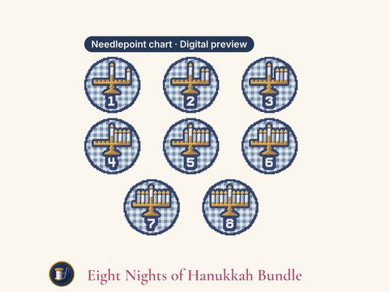

Digital previewEight Nights of Hanukkah
Eight Nights of Hanukkah Needlepoint Patterns, Numbered Menorah Ornament Charts PDF, 13 or 18 Mesh
Buy on EtsyEight Nights of Hanukkah needlepoint patterns (set of 8, PDF): One round for each night of Hanukkah, numbered 1 to 8: the menorah with the shamash and the first night's candle lit at the right, one more candle to its left each night, until all eight burn on the last. Each menorah and its white number sit on a navy patch in blue and white gingham. All eight in one download, for ornaments, gift tags or a night-by-night countdown.
Instant download. A digital pattern: a PDF chart and a ZIP of 24 PNG files (true size for 13 and 18 mesh, and Stitchly-ready). Not a painted canvas or kit; nothing is shipped.
How to download
Open etsy.com in a web browser (the Etsy app can't download files) > You > Purchases > Download files.
You get
- 52-page PDF: color chart, printer-friendly symbol chart, thread list, how-to, and true-size pages for tracing
- ZIP: 16 true-size PNGs (13 and 18 mesh for each design); 8 Stitchly-ready PNGs, 1 pixel = 1 stitch (one per design); a DMC color list per design to check the import against; and step-by-step Stitchly import notes
- Both 13 and 18 mesh in one download: no need to buy twice.
- A DMC shopping list for all 8 designs: every floss number once, with skein estimates for the whole set, on one page; each design's own thread list too.
Size (stitched area)
- Hanukkah Night 1 Ornament: 3.0" x 3.0" on 18 mesh, 4.2" x 4.2" on 13 mesh (54 x 54 stitches)
- Hanukkah Night 2 Ornament: 3.0" x 3.0" on 18 mesh, 4.2" x 4.2" on 13 mesh (54 x 54 stitches)
- Hanukkah Night 3 Ornament: 3.0" x 3.0" on 18 mesh, 4.2" x 4.2" on 13 mesh (54 x 54 stitches)
- Hanukkah Night 4 Ornament: 3.0" x 3.0" on 18 mesh, 4.2" x 4.2" on 13 mesh (54 x 54 stitches)
- Hanukkah Night 5 Ornament: 3.0" x 3.0" on 18 mesh, 4.2" x 4.2" on 13 mesh (54 x 54 stitches)
- Hanukkah Night 6 Ornament: 3.0" x 3.0" on 18 mesh, 4.2" x 4.2" on 13 mesh (54 x 54 stitches)
- Hanukkah Night 7 Ornament: 3.0" x 3.0" on 18 mesh, 4.2" x 4.2" on 13 mesh (54 x 54 stitches)
- Hanukkah Night 8 Ornament: 3.0" x 3.0" on 18 mesh, 4.2" x 4.2" on 13 mesh (54 x 54 stitches)
You'll need
- Blank 13 or 18 mesh canvas (the PDF gives the size to cut)
- 11 DMC floss colors (numbers and skein estimates are in the PDF)
- A tapestry needle; acrylic paint and a canvas marker if you paint your own canvas
Skill: Intermediate (10 to 11 colors per design and finer details)
Using the Stitchly app
- Each Stitchly-ready PNG is 1 pixel = 1 stitch; its size and number of DMC colors are in its file name.
- In Stitchly, choose Convert a photo and type in that size and color count. Step-by-step notes are in the download.
- It's a PNG image, not a .stitchly project file. Stitchly is a separate app, sold separately, and importing may need its full version. This shop isn't affiliated with it.
License
Personal use: paint and stitch it for yourself and as gifts. Please don't share or resell the files, sell canvases painted from them, or use them for mass production.
Colors on screen are approximate; check them against a DMC color card. Because this is a digital download it can't be returned, but if anything is wrong with your file, message me and I'll make it right.
Designed by Buoys & Bobbins NDLPT.